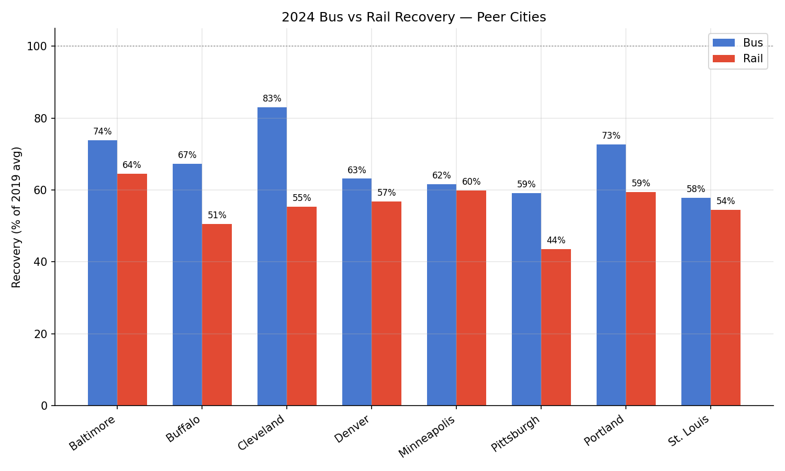
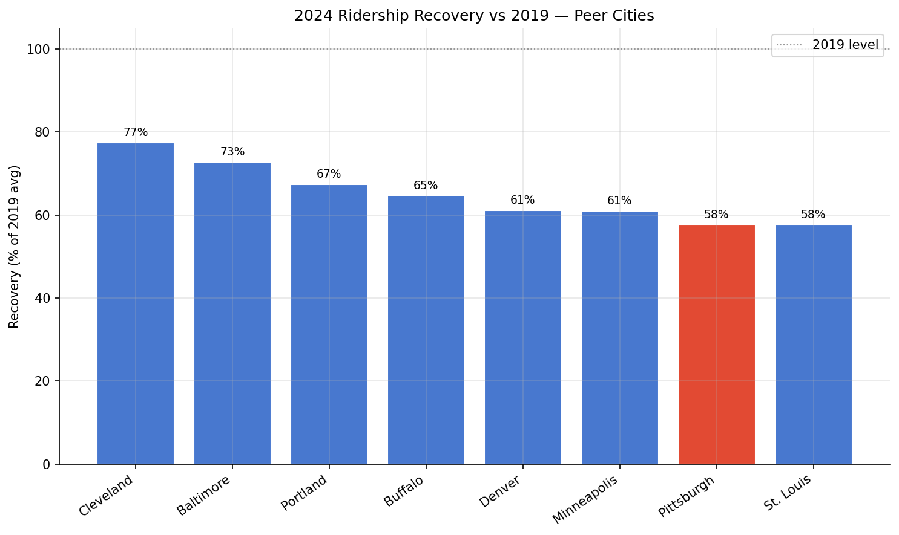
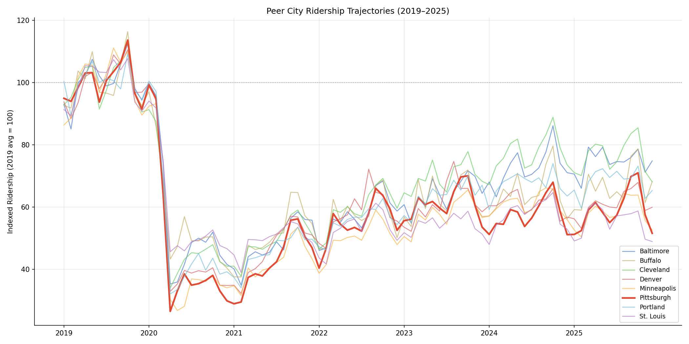

Analysis
37 - Peer City Ridership Comparison
Equity and Strategic Planning
Coverage: 2002-01 to 2025-12 (from ntd_ridership).
Built 2026-05-15 18:36 UTC · Commit 2317a81
Page Navigation
Analysis Navigation
Data Provenance
flowchart LR
37_peer_city_ridership(["37 - Peer City Ridership Comparison"])
t_ntd_ridership[("ntd_ridership")] --> 37_peer_city_ridership
05_ntd_ridership[["NTD Ridership ETL"]] --> t_ntd_ridership
u1_05_ntd_ridership[/"data/ntd-monthly-ridership/December 2025 Complete Monthly Ridership (with adjustments and estimates)_260202.xlsx"/] --> 05_ntd_ridership
d1_37_peer_city_ridership(("polars (lib)")) --> 37_peer_city_ridership
classDef page fill:#dbeafe,stroke:#1d4ed8,color:#1e3a8a,stroke-width:2px;
classDef table fill:#ecfeff,stroke:#0e7490,color:#164e63;
classDef dep fill:#fff7ed,stroke:#c2410c,color:#7c2d12,stroke-dasharray: 4 2;
classDef file fill:#eef2ff,stroke:#6366f1,color:#3730a3;
classDef api fill:#f0fdf4,stroke:#16a34a,color:#14532d;
classDef pipeline fill:#f5f3ff,stroke:#7c3aed,color:#4c1d95;
class 37_peer_city_ridership page;
class t_ntd_ridership table;
class d1_37_peer_city_ridership dep;
class u1_05_ntd_ridership file;
class 05_ntd_ridership pipeline;
Findings
Findings: Peer City Ridership Comparison
Summary
Among 8 peer mid-size transit agencies, Pittsburgh ties with St. Louis for the lowest overall ridership recovery at 57.6% of 2019 levels (2024 average). Cleveland leads peers at 77.4%. PRT's bus recovery (59.2%) and rail recovery (43.6%) both rank near the bottom of the peer group.
Key Numbers
- Pittsburgh 2024 recovery: 57.6% of 2019 average
- Peer group range: 57.6% (Pittsburgh/St. Louis) to 77.4% (Cleveland)
- PRT bus recovery: 59.2% (7th of 8 peers; only St. Louis lower at 57.8%)
- PRT rail recovery: 43.6% (lowest of all 8 peers)
- Best bus recovery: Cleveland at 83.0%
- Best rail recovery: Baltimore at 64.5%
- All 8 peers remain below 2019 levels as of 2024
- COVID trough (Apr 2020): all peers dropped to ~10–20% of 2019 levels
Observations
- Cleveland's relatively strong recovery (77.4%) may reflect its smaller pre-pandemic base and sustained bus ridership in a less remote-work-prone labor market.
- Bus recovery outpaces rail recovery at all 8 peers without exception. The bus-rail gap ranges from ~2 pp (Minneapolis) to ~28 pp (Cleveland).
- Pittsburgh's light rail (T) at 43.6% is the weakest rail recovery in the peer group, consistent with the T's low frequency and suburban commuter orientation.
- Portland (67.4%) and Baltimore (72.8%) show stronger recovery despite comparable city size, suggesting that service investments and fare policy may matter.
- The indexed time series shows all 8 peers following a similar pandemic trajectory: sharp drop in Apr 2020, gradual recovery through 2021–2022, then plateauing in 2023–2024.
- Pittsburgh's trajectory flattens earlier than most peers, suggesting recovery stalled around mid-2022.
Discussion
Pittsburgh's position at the bottom of this peer group is concerning but not extreme — St. Louis is equally low. The light rail drag is the largest single factor: if PRT's rail had recovered to the peer median (~56%), overall recovery would be ~60%. The bus recovery gap versus peers like Cleveland and Portland suggests room for improvement through service frequency, reliability, or fare initiatives.
Caveats
- Peer selection is subjective; different peer sets could yield different rankings. These 8 were chosen for comparable metro size and multimodal service.
- NTD data aggregates all modes including demand-response (paratransit), which is excluded from the bus/rail breakdown but included in overall totals.
- Recovery percentages compare 2024 monthly average to 2019 monthly average. Seasonal patterns may differ between cities.
- Some agencies may have had major service changes (route restructures, fare changes) that affect ridership independent of pandemic recovery.
Output

bus vs rail recovery by peer city.

bar chart of 2024 vs 2019 recovery %, PRT highlighted.

time-series line chart of indexed ridership for all 8 peers.
No interactive outputs declared.
per-peer recovery metrics.
Preview CSV
monthly indexed data for all peers.
Preview CSV
Methods
Methods: Peer City Ridership Comparison
Question
How does Pittsburgh's ridership trajectory and post-pandemic recovery compare to 7 peer cities from 2019 through 2025?
Approach
- Select 8 peer transit agencies by NTD ID: Pittsburgh (30022), Baltimore (30034), Cleveland (50015), Denver (80006), St. Louis (70006), Buffalo (20004), Portland (8), Minneapolis (50027).
- Sum monthly UPT across all modes and TOS per agency, Jan 2019–Dec 2025.
- Index each agency's monthly total to its 2019 monthly average (= 100) to normalize for size.
- Plot indexed ridership trajectories for all 8 peers.
- Compute 2024 vs 2019 recovery percentage for each peer.
- Break down recovery by mode (bus vs rail) where the agency operates both.
Data
ntd_ridership— monthly UPT by agency/mode/TOS, filtered to Jan 2019–Dec 2025.ntd_agency— agency names and mode codes.
Output
output/peer_ridership_indexed.png— time-series line chart of indexed ridership for all 8 peers.output/peer_recovery_bar.png— bar chart of 2024 vs 2019 recovery %, PRT highlighted.output/peer_mode_breakdown.png— bus vs rail recovery by peer city.output/peer_ridership_data.csv— monthly indexed data for all peers.output/peer_recovery_summary.csv— per-peer recovery metrics.
Source Code
|
Sources
| Name | Type | Why It Matters | Owner | Freshness | Caveat |
|---|---|---|---|---|---|
| ntd_ridership | table | Primary analytical table used in this page's computations. | Produced by NTD Ridership ETL. | Updated when the producing pipeline step is rerun. | Coverage depends on upstream source availability and ETL assumptions. |
Upstream sources (1)
|
|||||
| polars | dependency | Runtime dependency required for this page's pipeline or analysis code. | Open-source Python ecosystem maintainers. | Version pinned by project environment until dependency updates are applied. | Library updates may change behavior or defaults. |